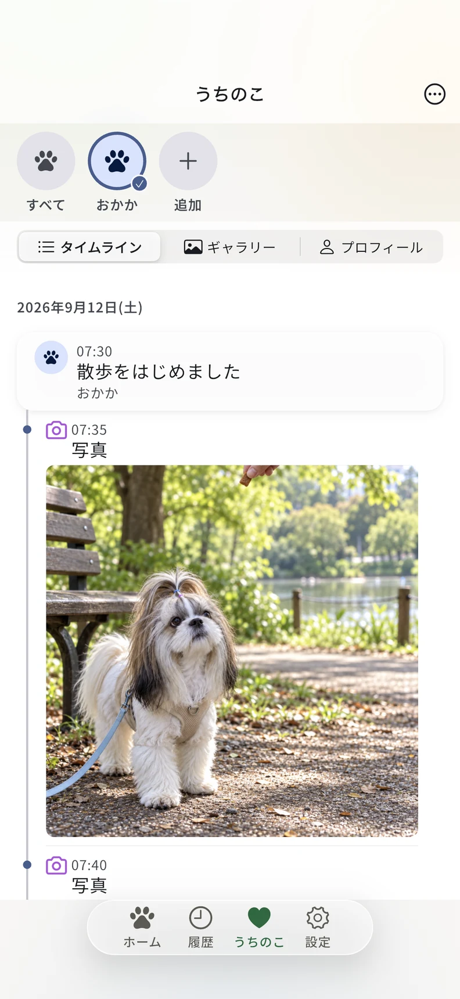
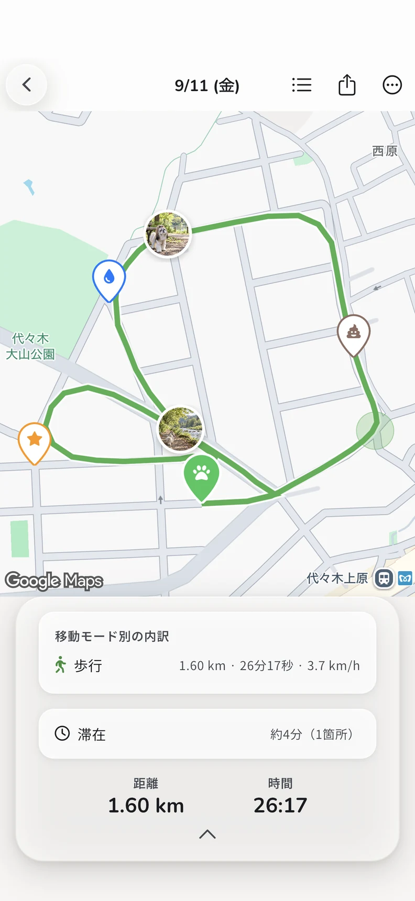
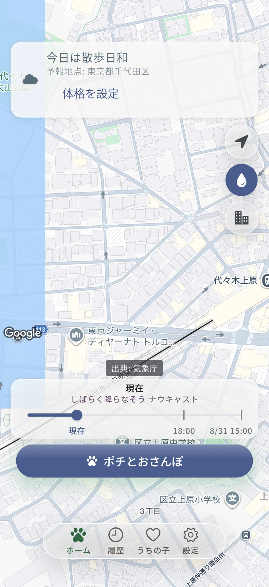
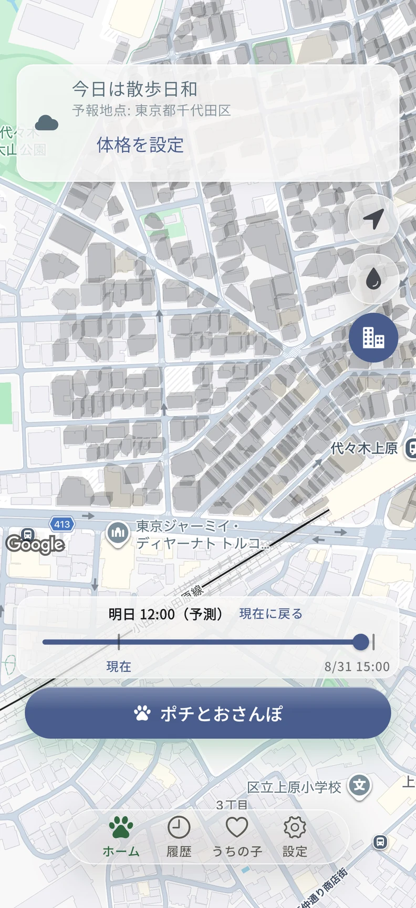
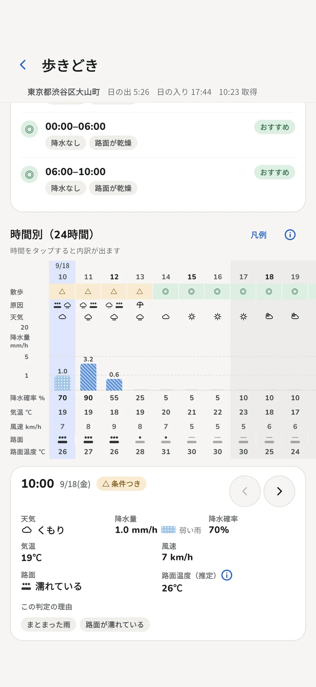
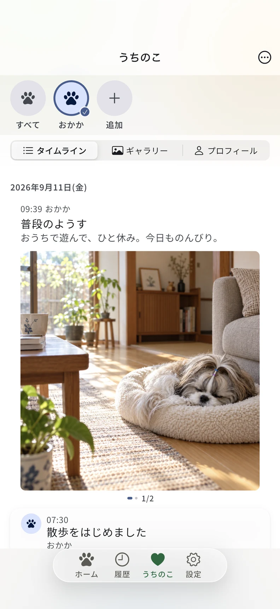
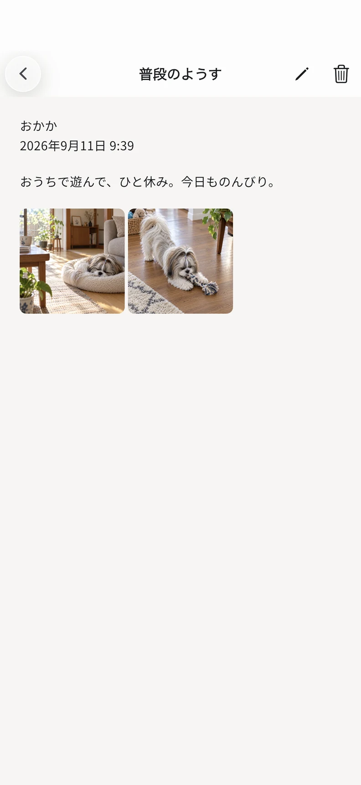
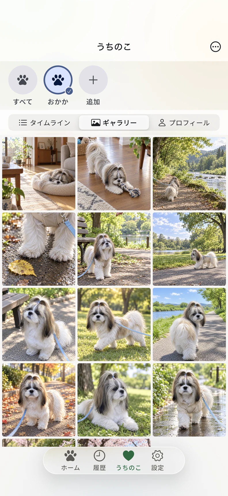
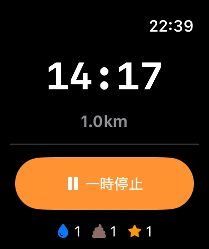

A LITTLE WALK, A LITTLE LIFE.
なんでもない散歩が、うちのこの記録になる。
いつもの道も、おうちでのひと休みも。
愛犬との「今日」を、わんぽに。

無料・アプリ内課金なし


01 — OUT THE DOOR
いつもの道にも、発見がある。
今日は、どっちに行こう。
歩いたルート、距離、時間を記録。
トイレや写真も、その場所に残せます。

02 — A LOOK AT THE SKY
空を見て。歩く時間を、選ぼう。
雨雲、建物の日陰、時間ごとの天気。
出かける前の「どうかな」を、ひとつのアプリで。
雨雲のようす

日陰の目安も、見ておく

時間ごとの天気を見る

天気・日陰・路面温度は目安です。安全を保証するものではありません。その場の天候や路面、愛犬のようすも確かめてください。
03 — THE IN-BETWEEN MOMENTS
散歩じゃない日も、うちのこの日。
へんな寝ぐせ。夢中な横顔。
普段のようすを、ひとことと写真で。
散歩の記録と一緒に、時系列で振り返れます。


「普段のようす」の画面を見る

04 — SO MANY VERSIONS OF YOU
あの日のきみに、また会える。
写真も、動画も、ギャラリーに。
あの道、あの寝顔、あのしぐさ。
一枚ずつ増えていく、うちのこの毎日。

05 — A LITTLE CLOSER TO HAND
手元で記録。目線は、きみへ。
Apple Watchから、散歩の開始・終了やマーカーを。
対応するiPhoneでは、Live ActivityやDynamic Islandでも散歩の状況を確認できます。
対応するiPhone・Apple Watchが必要です。

06 — EVERY LITTLE THING, INCLUDED
毎日にほしいこと。ぜんぶ、無料で。
散歩の記録から、写真、日々の振り返りまで。
現在、以下の18機能を無料・アプリ内課金なしで使えます。
| 機能 | できること・条件 | 無料 |
|---|---|---|
| 散歩の記録 | ||
| GPSルート・距離・時間 | 歩いた道を、地図と数字で。 | 無料 |
| バックグラウンド記録 | 必要な位置情報権限を許可して利用。 | 無料 |
| トイレ・写真マーカー | 散歩中の出来事を、その場所に。 | 無料 |
| 出かける前に | ||
| 雨雲レーダー | 周辺の雨雲を確認。通信が必要です。 | 無料 |
| 建物の日陰の目安 | 推定情報です。安全を保証するものではありません。 | 無料 |
| 時間ごとの天気 | 気温・降水・風・推定路面温度を確認。 | 無料 |
| うちのこの毎日 | ||
| みんな・愛犬別タイムライン | 散歩と日常を、時系列で振り返る。 | 無料 |
| 普段のようす・写真 | 何気ない一日を、ひとことと写真で。 | 無料 |
| 写真・動画ギャラリー | 残してきた姿をまとめて見る。 | 無料 |
| 週・月・年の履歴 | 歩いてきた記録を、期間ごとに。 | 無料 |
| 愛犬ごとの散歩目標 | それぞれの子に合わせて設定。 | 無料 |
| 振り返りと共有 | ||
| 散歩後のコメント | 条件と同意に応じたAIコメント、または端末内の定型文。※1 | 無料 |
| 写真つきサマリー共有 | 散歩の思い出を、自分の操作で共有。 | 無料 |
| 共有時に位置情報を隠す | 位置表示を抑える設定。完全な匿名化ではありません。 | 無料 |
| 手元でも、これからも | ||
| Apple Watch | 散歩の開始・終了・マーカー。対応する機器が必要です。 | 無料 |
| Live Activity / Dynamic Island | 対応するiPhoneで散歩の状況を確認。 | 無料 |
| バックアップの書き出し・復元 | 記録をファイルへ書き出し、復元。 | 無料 |
| 端末内の記録・解析の同意設定 | 利用状況の解析は任意。同意や外部通信の詳細はポリシーへ。 | 無料 |
※1 散歩を完了し、合計経過時間が20分以上で、専用の同意がある場合に、集計情報をFirebase AI Logic / Geminiへ送信してコメントを生成します。それ以外や生成に失敗した場合は、端末内の定型文を使います。
位置情報・写真などの権限や、通信が必要な機能があります。データの取り扱いと外部通信はプライバシーポリシーをご確認ください。
記録は自動で公開されますか？
自動で公開されることはありません。共有は自分の操作で行います。位置表示を隠す機能は、完全な匿名化を保証するものではありません。
使い方に困ったら？
SAME TIME TOMORROW?
明日も、きみと歩こう。
わんぽをApp Storeで見る ↗

今日のつづきを、わんぽで。